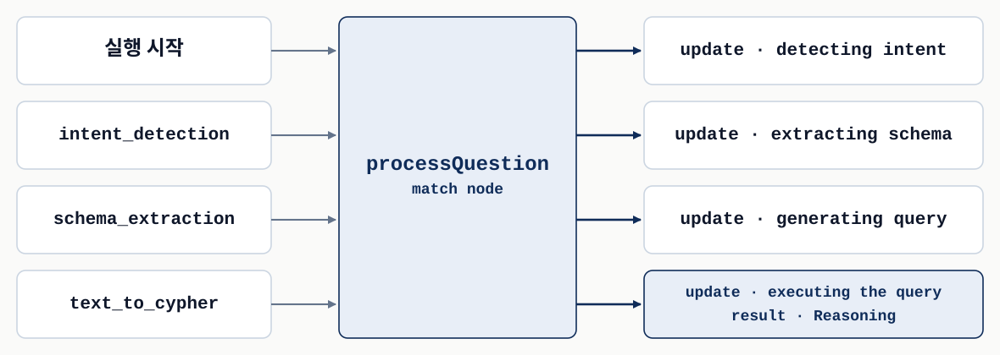
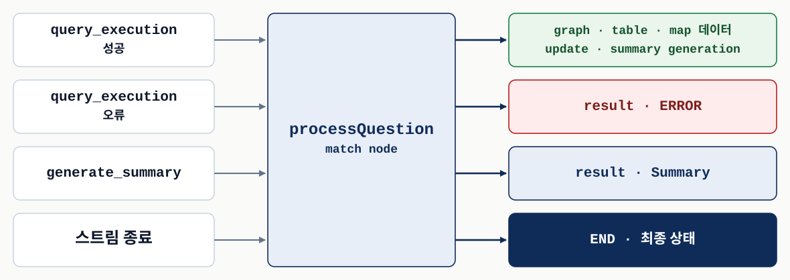
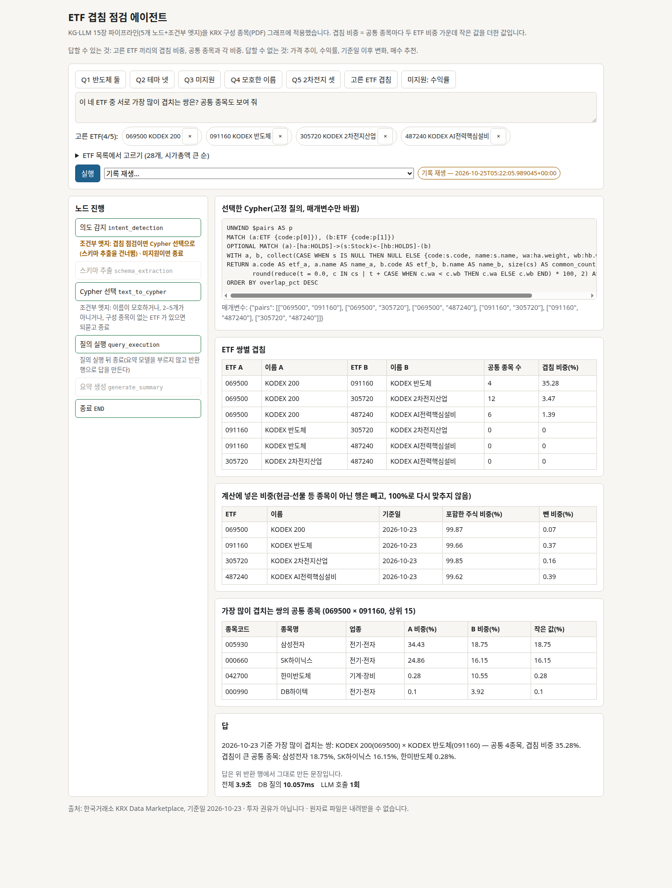

구조
여러 단계가 서로를 직접 호출하지 않고 협업하려면 무엇을 공유해야 하는가?
지식 그래프와 LLM 실전
Chapter 15 · 14장의 질의 단계를 공유 상태 위의 그래프로 구현하고 화면에 붙인다
14장에서 설계한 질의 단계를 LangGraph 노드로 옮기고, 사용자가 보는 화면은 Streamlit으로 붙인다.
여러 단계가 서로를 직접 호출하지 않고 협업하려면 무엇을 공유해야 하는가?
생성된 질의가 실패하거나 출력 형식이 다를 때 다음 단계는 어디서 결정되는가?
수십 초 걸리는 파이프라인의 진행 상황을 화면에 어떻게 실시간으로 보여 주는가?
노드는 자기가 맡은 필드만 돌려주고, 실행 실패와 출력 형식에 따른 분기는 조건부 엣지 하나가 정한다.
네 절이 각자 하나의 질문에 답한다.
| 절 | 질문 | 이 장의 답 |
|---|---|---|
| 15.1 | 14장의 단계를 어떻게 실행 가능한 그래프로 만드는가? | 단계마다 에이전트 함수 하나, 함수끼리는 공유 상태로만 소통한다. |
| 15.2 | 사용자는 이 파이프라인과 어떻게 대화하는가? | 그래프 캔버스·선택·질문 입력·대화 이력으로 화면을 나눈다. |
| 15.3 | 실제 수사에서 쓸 만한가? | 앞 질문의 결과를 선택해 다음 질문의 맥락으로 쓰며 사건을 좁힌다. |
| 15.4 | 이 토대를 어떻게 키우는가? | 관찰 가능성과 “전문가라면 무엇을 할까”가 개선의 출발점이다. |
| 보충 | 같은 구조가 ETF 그래프에서도 동작하는가? | 공유 상태·노드·조건부 엣지의 원리를 그대로 쓰고, 숫자를 내는 질의는 앱이 고정했다. |
가장 긴 부분은 §15.1의 구현이다. 코드는 Listing의 핵심 줄만 보고, 원서와 저장소 코드가 어긋나는 곳은 해당 화면에서 짚는다.
여러 단계가 서로를 직접 부르지 않고 어떻게 협업하는가.
LangGraph는 LLM으로 움직이는, 상태를 유지하는 다중 액터 애플리케이션을 만드는 라이브러리다.
익숙한 RAG 예로 본다. 문서 검색과 답변 생성 두 작업뿐이다.

왼쪽에서 오른쪽으로 읽는다. 진한 칸이 그 에이전트가 새로 쓴 필드다. 저자들의 화이트보드 비유와 달리, 에이전트는 바뀐 필드만 반환하고 합치는 일은 LangGraph가 한다.
데이터는 상태를 거쳐서만 전달되므로 에이전트끼리는 서로의 존재를 몰라도 된다.
노드는 에이전트 함수, 엣지는 다음에 무엇을 실행할지다.
상태에서 필요한 데이터를 읽고, 끝나면 자기 결과로 상태를 갱신하는 함수
다음 노드를 고정하지 않고 앞 에이전트의 출력을 보고 임의의 로직으로 고른다
LLM이 구성요소 하나인 라우터부터 LLM이 경로를 정하는 완전 자율 시스템까지 만들 수 있다. 이 장의 파이프라인은 코드로 보면 라우터 쪽이다.
저자들은 이 흐름 제어의 유연성을 LangGraph를 고른 이유로 든다. 이 장에서 다음 노드는 상태 필드를 검사하는 파이썬 조건문이 고른다.
처리 단계마다 에이전트 함수 하나를 두면 14장의 설계가 그대로 그래프가 된다.

실선은 항상 따라가는 주 흐름, 점선은 질의 실행 결과에 따라 하나만 고르는 조건부 경로다.
14장의 시각화 단계는 노드가 아니다. 파이프라인은 형식을 정하고 결과를 준비할 뿐, 그리는 일은 화면이 한다.
길어지기 쉬운 프롬프트와 그래프 주석을 코드 밖 설정 파일 하나에 모은다.
notes: >
- do not expand ANPRCameraEvent unless you need to connect it to both Vehicle and ANPRCamera
examples:
- question: Crimes that occurred on March 14th, 2025
answer: MATCH (c:Crime) WHERE c.date starts with "2025-03-14"
prompts:
text_to_cypher: {system: "Your task is to generate a Cypher query ...",
template: templates/text_to_cypher.template}notes는 도메인 규칙, examples는 질문·Cypher·근거 묶음, prompts는 단계별 템플릿 경로다.
템플릿은 Jinja2로 쓰고 별도 파일에 둔다. 저자들은 한곳에서의 조정, 확장 토대, 프롬프트 버전 관리를 이점으로 든다.
ChainConfiguration의 두 메서드가 설정의 저장과 사용을 나눈다.
ChainConfiguration.get_prompt가 템플릿 파일을 읽어 값을 채우고, getAnnotations가 노트와 예시를 돌려준다.
에이전트는 “어떤 이름의 프롬프트를 어떤 값으로”만 요청하고, 템플릿이 어떻게 조립되는지는 모른다.
설정 파일이 없다. 모델을 부르는 의도 감지 노드에만 짧은 지시문을 두고, 질문과 고른 ETF 코드를 JSON으로 넘긴다.
텍스트 자원을 코드 밖 한곳에 모아, 에이전트 코드가 프롬프트 문장에 묶이지 않게 한다.
LLM에 필요한 것은 개념 스키마인데, 프로그램이 읽을 수 있는 것은 기술 스키마뿐이다.
업무 개념이 아닌 노드·관계, 내부 ID나 타임스탬프 같은 구현 속성을 뺀다.
남은 요소에 업무 수준의 설명, 도메인 용어와 제약을 붙인다.
apoc.meta.schema로 추출하고, 스킵 리스트로 거르고, 설명을 붙인다.
설정은 데이터 모델이 바뀌어도 고치기 쉽도록 YAML로 둔다.
Node는 자신을 (:Label /* 설명 */ { 속성 }) 모양의 문자열로 바꾼다(Listing 15.3).
def get_schema(self): # 표본 없이 DB 전체
result = list(session.run("CALL apoc.meta.schema({sample:-1})"))[0]["value"]
[Node.mk_node(k, v) for k, v in result.items() if v["type"] == "node"]
def apply_configuration(config):
Node.items = {n.name: n for n in Node.items.values()
if n.name not in config["skip"]["classes"]} # ① 노드
for node in Node.items.values():
node.drop_properties(config["skip"]["properties"]) # ② 속성
node.description = config["descriptions"]["classes"].get(node.name) # ③ 설명(설명용 축약) ④ 관계는 출발·도착 노드나 이름이 스킵 대상이면 뺀다. 설명(③)은 노드에만 붙는다.
결과 텍스트가 질의 생성 프롬프트의 스키마 자리에 들어간다. 관계 설명이 필요하면 이 부분을 직접 보완해야 한다.
교재 저장소 노트북이 시드 그래프에 이 코드를 돌린 저장 출력이다. LLM을 쓰지 않아 다시 돌려도 같다.
| 항목 | 다듬기 전 | 다듬은 뒤 |
|---|---|---|
| 노드 타입 | 8 | 8 |
| 속성 수 | 96 | 87 |
| 스키마 텍스트 문자 수 | 3,595 | 4,342 |
스킵이 지운 분량보다 /* … */ 설명이 더 길다. 목적은 압축이 아니라 잡음을 걷고 의미를 붙이는 일이다.
각 에이전트가 정해진 필드를 채우므로 틀린 단계를 필드 이름으로 거슬러 올라갈 수 있다.
class AgentState(TypedDict):
question: str # 질문 입력
output_type: str; output_type_reason: str # 의도 감지 결과
schema: str # 스키마 정보
query: str; query_reasoning: str; query_message: str # 질의 생성
results_error: list # 오류 처리
summary: str; summary_reason: str; summary_analysis: bool # 요약 생성
information: str; retries: int # 질의 재시도마지막 줄의 information·retries는 결과물이 아니라 재시도 판정과 오류 맥락을 위한 흐름 제어용이다.
저자들은 이것을 책임의 사슬이라 부른다. 상태는 데이터와 함께 라우팅·오류 처리에 필요한 맥락도 들고 다닌다.
교재 Listing 15.5의 선언과, 교재 저장소 코드가 실제로 반환하고 읽는 키를 대조했다.
| 선언 | 실제 쓰는 키 · 쓰는 곳 | 읽는 곳 |
|---|---|---|
output_type | 같은 키 · 의도 감지 | 질의 실행, 라우팅, 질의 생성·요약 템플릿 |
output_type_reason | 채우는 곳 없음. 의도 감지는 output_reason로 반환 | 두 키 모두 없음 |
summary_analysis | 저장소는 summary_analisys로 선언·반환 | 화면의 접힌 디버깅 칸만 |
retries | 스키마 추출 0, 질의 실행 +1 | 실행 후 라우팅 |
“누가 무엇을 채우는지”라는 선언의 계약은 키 이름이 어긋나는 순간 조용히 깨진다.
다섯 에이전트는 모두 AgentState를 받아 자기가 채울 필드만 딕셔너리로 돌려준다.

윗줄은 실행 순서, 아래 상자는 각 에이전트가 반환하는 필드다. 주황색은 선언과 다른 반환 이름, 점선은 조건이 맞을 때만 지나는 경로다.
LLM을 부르는 세 에이전트는 설정에서 프롬프트를 받아 공통 함수 run_prompt로 실행한다.
의도 감지는 질문 하나로 시각화 형식(표·그래프·지도)과 그 근거를 정한다.
# run_prompt 안: message = self.model.invoke(messages) 다음
payload = re.sub(r'^\s*```json\s*|\s*```\s*$', '', message.content, flags=re.DOTALL)
return json5.loads(payload)
def intent_detection(self, state: AgentState):
system, prompt = self.config.get_prompt("intent_detection", question=state["question"])
results = self.run_prompt(prompt, system)
return {"output_type": results["type"], "output_reason": results["reason"]}(설명용 축약) 반환 딕셔너리에는 자기 몫 두 필드만 있다. 나머지 상태는 LangGraph가 기존 상태에 합친다.
JSON을 코드 펜스로 감싸거나 후행 쉼표를 남기는 LLM 출력의 흔한 흔들림을 두 겹으로 견딘다.
Listing 15.7은 원서에 이미지로만 실려 교재 저장소 코드로 옮겼다.
def schema_extraction(self, state: AgentState): # Listing 15.7
self.neo4j_schema.get_schema()
self.neo4j_schema.apply_configuration()
return {"schema": str(self.neo4j_schema), "retries": 0}
def text_to_cypher(self, state: AgentState): # Listing 15.8
extra = {"annotations": self.config.getAnnotations(), "selection": self.selection}
params = dict(state) | extra
system, prompt = self.config.get_prompt("text_to_cypher", **params)
results = self.run_prompt(prompt, system)dict(state) | extra: 상태 전체에 주석과 화면 선택을 더한 딕셔너리가 그대로 템플릿 변수가 된다.
재시도 때는 이 경로로 information(시도한 질의와 오류)이 질문 뒤에 붙는다. 템플릿이 요구하는 success 필드는 읽지 않는다.
성공하면 그래프·지도는 레코드 그대로, 표는 DataFrame으로 결과를 둔다.
def query_execution(self, state: AgentState):
try:
results = self.neo4j_schema.run(state["query"]) # 형식에 맞춰 self.results에 보관
results_error, information = None, ""
except neo4j.exceptions.ClientError as e:
results_error = str(e)
information = f"We tried: {state['query']} and we got: {e}"
retries = state.get("retries", 0) + 1
return {"results_error": results_error, "retries": retries, "information": information}(설명용 축약 — self.results 대입 생략) retries 줄은 try 밖에 있어 성공한 실행도 센다. 스키마 추출이 0으로 맞춰 두므로 첫 실행 뒤 1이 된다.
실패하면 오류를 상태에 남기고, 실행 후 라우팅이 그 오류를 보고 재시도를 정한다.
post_query_execution은 상태를 바꾸지 않고 행선지 문자열만 돌려주는 동적 엣지다.

노트북이 16가지 상태 조합을 모두 넣어 보니 retry는 오류가 있고 retries < 3인 4조합에서만 나왔다.
retries가 실행 횟수이므로 첫 실행과 재시도 두 번, 최대 세 번 실행된다. 저자들의 “최대 세 번 시도”와 같은 뜻이다.
구조는 텍스트-투-사이퍼와 같고, 질의 결과 레코드를 records로 더한다.
def generate_summary(self, state: AgentState):
extra = {"records": self.results, "selection": self.selection}
params = dict(state) | extra
system, prompt = self.config.get_prompt("generate_summary", **params)
results = self.run_prompt(prompt, system)
return {"summary": results["summary"], "summary_reason": results["reasoning"],
"summary_analisys": results["results_analysis"]}results_analysis는 질문이 분석을 요청했는지에 대한 LLM의 판단이다. §15.3.4의 분석 절이 여기서 나온다.
저장소 템플릿은 화면에 그래프가 함께 보인다는 점을 알리고, 질문과 무관한 데이터를 걸러 사실만 요약하라고 지시한다.
add_node·add_edge·add_conditional_edges로 노드, 실선, 점선을 만든다.
graph = StateGraph(AgentState)
graph.add_node("intent_detection", self.intent_detection)
graph.add_edge("intent_detection", "schema_extraction")
# schema_extraction → text_to_cypher → query_execution 도 같은 방식
graph.add_conditional_edges("query_execution", self.post_query_execution,
{"retry": "text_to_cypher", "summarize": "generate_summary", "END": END})
graph.add_edge("generate_summary", END)
graph.set_entry_point("intent_detection")
self.graph = graph.compile(checkpointer=self.memory)(설명용 축약 — 다른 노드 등록 생략) "retry"가 text_to_cypher로 이어져 재시도 루프가 생긴다.
교재에 실린 생성자에는 self.memory를 만드는 줄이 없다. 저장소는 MemorySaver()를 만들고, 이것이 있어야 실행 상태를 꺼낼 수 있다.
파이프라인은 질문 하나에 수십 초가 걸릴 수 있어, 진행을 이벤트로 바로 보여 줘야 한다.
초기 상태를 주고 끝나면 최종 결과를 받는다. 그동안 사용자는 아무 피드백 없이 기다린다.
중간 단계를 볼 수 있지만, 갱신을 앱 코드가 직접 다루면 앱 로직이 복잡해진다.
질문을 받아 이벤트를 차례로 내보내는(yield) 함수 하나를 사이에 둔다. 코드는 위에서 아래로 읽히는 선형 구조로 남는다.
인터페이스는 실행을 이벤트로 바꾸는 일에만 집중하고, 무엇을 어떻게 보여 줄지는 화면이 정한다.
왼쪽은 LangGraph가 알리는 일, 오른쪽은 화면이 받는 이벤트다. 실행 시작부터 텍스트-투-사이퍼까지.

한 그림을 두 장에 나눠 보여 준다. 전체 그림은 상세 설명 링크에 있다.
텍스트-투-사이퍼가 끝나면 진행 알림과 함께 질의 근거를 result 이벤트로 보낸다.
질의 실행의 성공과 오류, 요약 생성, 스트림 종료에 대응하는 이벤트다.

초록 행의 요약 시작 알림은 출력 형식이 그래프나 지도일 때만 나온다.
모든 이벤트에 현재 상태가 함께 실리므로, 화면은 무엇을 어떻게 보여 줄지 스스로 정할 수 있다.
stream_mode="updates"는 바뀐 필드만 주므로 전체 상태는 get_state로 따로 읽는다.
results = pipeline.graph.stream({"question": question}, config=config, stream_mode="updates")
yield "update", "*detecting intent...*", {"question": question}
for result in results:
node, value = list(result.items())[0]
current_state = pipeline.graph.get_state(config).values
match node:
case "text_to_cypher":
yield "update", "*executing the query...*", current_state
yield "result", ("Reasoning", value["query_reasoning"]), current_state이벤트마다 현재 상태를 함께 실어, 무엇을 보여 줄지는 화면이 정하게 한다.
파이프라인을 쓰고 능력을 확인할 화면은 무엇을 갖춰야 하는가.
화면과 파이프라인이 같은 파이썬 프로세스에서 돌아 별도 API나 직렬화 계층이 필요 없다.
저자들은 이 선택을 시제품과 시연 단계에 맞는 것으로 본다.
| 요구 | Streamlit에서 쓰는 것 |
|---|---|
| 노드를 둘러보고 고르는 그래프 시각화 | 내장 시각화와 커스텀 컴포넌트 |
| 여러 단계를 거치는 동안의 실시간 피드백 | 세션 상태와 자동 UI 갱신 |
| 자연어로 주고받는 상호작용 | 채팅 인터페이스 기본 지원 |
| 선택한 요소와 처리 맥락 유지 | 세션 상태 |
운영 배포에는 더 전문화된 인터페이스가 필요할 수 있다는 것이 저자들의 단서다.
그래프 캔버스를 가운데 두고 선택, 대화 이력, 질문 입력이 둘러싼다.
질의 결과의 노드와 관계를 그리고, 노드를 더블클릭해 고른다.
고른 노드를 모아 두고, 질문에서 “선택한 범죄”처럼 가리키게 한다.
답의 형식에 따라 지도·표·요약으로 바뀌고, 처리 중에도 갱신된다.
질문과 현재 선택을 함께 파이프라인에 넘긴다.
질문마다 새 thread_id로 실행되므로, 결과를 다음 질문으로 넘기는 통로는 선택이다. 이 회차의 화면은 뒤의 ETF 구현에서 본다.
MessageHistory는 지난 대화의 영구 기록과 지금 처리 중인 메시지를 함께 관리한다.
class MessageHistory:
def __init__(self):
self.messages = [{}] # 마지막 딕셔너리가 '지금 메시지'
def update(self, message, finalize=False):
self.messages[-1].update(message)
if finalize:
self.messages.append({}) # 끝난 메시지 뒤에 빈 메시지를 연다
# display_message: 키가 있으면 그린다 — query_reasoning · table · map · query · summary(설명용 축약) 키 이름 대부분이 상태 필드와 같아, 이벤트에 실린 현재 상태를 그대로 합치면 화면 섹션이 된다.
처리 중 갱신은 임시 자리표시자에 잠깐 보이고, END가 오면 화면을 다시 그려 영구 기록으로 바꾼다.
질문이 들어오면 캔버스에서 고른 노드를 꺼내 질문과 함께 넘긴다. 분기만 줄여 보인다.
for response_type, response, current_state in \
chain.processQuestion(question=str(question), selection=selection):
state.messages.update(current_state)
match response_type:
case "update": placeholder.markdown(response)
case "graph" | "map": store_to_canvas(response)
case "table" | "chart": placeholder.table(response)
case "result": placeholder.write(...)
case "END": state.messages.update(current_state, finalize=True); st.rerun()(설명용 축약 — 그대로 실행하는 코드 아님) 표·result를 쓴 뒤에는 새 말풍선과 자리표시자를 연다. 그러지 않으면 다음 update가 덮어쓴다.
지도 응답은 캔버스와 이력 두 곳에 나타난다. 화면 계층은 노트북도 실행하지 않았고 코드 읽기로 설명한다.
수사관이 자연어 질문만으로 범죄·카메라·차량·소유자의 연결을 따라간다.
다섯 질문이 앞 결과를 선택으로 이어 받으며 범죄 무단침입 사건의 관심 차량을 좁힌다.
원서 결과는 다시 실행하지 않았다. 질문의 요지와 원서가 꼽은 능력, 이번 구현의 대응만 본다.
수사 중인 범죄 노드 하나
명시적 제약과 암묵적 기대의 해석, 노드 속성 요약
질문 1이 “얼마나 겹쳐?”를 겹침 점검 의도로, 두 이름을 ETF 코드로 해석하는 것을 보인다. 단일 노드 요약은 다루지 않았다.
대응은 능력 수준의 비교이며 같은 질의라는 뜻이 아니다.
원서 결과는 다시 실행하지 않았다. 질문의 요지와 원서가 꼽은 능력, 이번 구현의 대응만 본다.
선택한 범죄에서 1 km 안의 ANPR 카메라
공간 질의, 선택 인식, 지도 시각화 선택
선택 인식은 질문 2가 보인다(“이 네 ETF”). 위치 정보가 없어 공간 질의와 지도는 없다.
대응은 능력 수준의 비교이며 같은 질의라는 뜻이 아니다.
원서 결과는 다시 실행하지 않았다. 질문의 요지와 원서가 꼽은 능력, 이번 구현의 대응만 본다.
선택한 카메라가 그날 감지한, 인상착의에 맞는 차량
선택·시간 제약·속성 일치를 한 질의로 결합
질문 2가 고른 ETF 네 개의 여섯 쌍을 한 질의로 계산하고 겹침 비중 순으로 정렬한다.
대응은 능력 수준의 비교이며 같은 질의라는 뜻이 아니다.
원서 결과는 다시 실행하지 않았다. 질문의 요지와 원서가 꼽은 능력, 이번 구현의 대응만 본다.
수사관이라는 역할을 밝히고 특히 의심스러운 차량을 묻는다
선택한 노드에서 제약 추출, 맥락에 따른 분석 요약
겹침 점검에서는 요약 노드를 쓰지 않고, 답 문장을 반환 행에서 그대로 만든다. 역할·의도를 밝힌 질문은 시험하지 않았다.
대응은 능력 수준의 비교이며 같은 질의라는 뜻이 아니다.
원서 결과는 다시 실행하지 않았다. 질문의 요지와 원서가 꼽은 능력, 이번 구현의 대응만 본다.
전과자 소유일 수 있다는 단서를 더해 가장 유력한 차량을 묻는다
소유 관계와 범죄 기록까지 확장한 분석
다루지 않았다. 대신 책에 없는 두 분기를 보인다. 질문 3은 데이터에 없는 수익률을 미지원으로 끝내고, 질문 4는 여러 ETF에 맞는 이름을 계산하지 않고 되묻는다.
대응은 능력 수준의 비교이며 같은 질의라는 뜻이 아니다.
§15.3의 수사 그래프 자리에 한국거래소 KRX Data Marketplace에서 받은 2026-10-23 기준 파일을 넣었다. 코스피 200·반도체·2차전지·AI 테마별로 시가총액 상위 7개씩.
| 노드 | 수 | 관계 | 수 |
|---|---|---|---|
ETF | 28 | HOLDS {weight} (ETF → Stock) | 1,681 |
Stock | 341 | IN_INDUSTRY (Stock → Industry) | 341 |
Industry · AssetManager · Index | 24 · 7 · 22 | MANAGED_BY · TRACKS | 28 · 28 |
현금 행은 종목으로 넣지 않고 비중을 다시 맞추지도 않는다. 파일은 화면에서 사람이 받았고 비공개 폴더에만 둔다.
책 코드를 옮겨 적지 않고, 같은 원리로 새로 작성했다.
| 책 | ETF 구현 | 바꾼 이유 |
|---|---|---|
| 설정·스키마 제공자 | 설정 파일 없음. 스키마 추출은 겹침 점검에서 건너뜀 | 질의가 고정이라 주석·스키마가 필요 없다 |
| 노드 다섯 | 그대로. 의도는 겹침 점검·미지원, 텍스트-투-사이퍼는 이름→코드 후 고정 질의 선택 | 숫자가 틀리면 안 되는 자리다 |
| 실행 후 라우팅 | 재생성 고리 대신 “이름이 모호하면 되묻고 종료” | 고정 질의는 고칠 오류가 없다 |
| 통합 계층·화면 | 같은 이벤트를 SSE로, FastAPI+React 한 페이지 | 답과 근거를 나란히 보인다 |
노드는 여전히 자기 몫의 상태 필드만 돌려준다. LangGraph 1.2에서도 상태·노드·엣지의 실행 모델은 책과 같다.
겹침 비중 = 공통 종목마다 두 ETF 안의 비중 가운데 작은 값을 더한 값. 같은 금액을 넣었을 때 같은 종목에 겹쳐 들어간 몫이다.
UNWIND $pairs AS p
MATCH (a:ETF {code:p[0]}), (b:ETF {code:p[1]})
OPTIONAL MATCH (a)-[ha:HOLDS]->(s:Stock)<-[hb:HOLDS]-(b)
WITH a, b, collect(CASE WHEN s IS NULL THEN NULL
ELSE {wa:ha.weight, wb:hb.weight} END) AS cs
RETURN a.code AS etf_a, b.code AS etf_b, size(cs) AS common_count,
round(reduce(t = 0.0, c IN cs |
t + CASE WHEN c.wa < c.wb THEN c.wa ELSE c.wb END) * 100, 2) AS overlap_pctLLM은 의도와 ETF 이름만 뽑는다. 텍스트-투-사이퍼 노드가 이름을 코드로 바꾸고 $pairs에 코드 쌍만 넣는다.
책은 LLM이 쓴 질의를 실행했다. 이 구현은 숫자를 내는 질의를 앱이 고정했다.
책은 질의 실행 뒤에서 갈라졌다. 이 구현은 그 앞의 두 곳에서 갈라지고, 요약 모델은 부르지 않는다.
graph.add_conditional_edges('intent_detection',
lambda s: 'text_to_cypher' if s['intent'] == 'overlap' else END)
graph.add_conditional_edges('text_to_cypher',
lambda s: END if s.get('stop_reason') else 'query_execution') # 모호·개수 → 되묻고 종료
graph.add_edge('query_execution', END) # 답은 반환 행에서 만든다되묻는 경우: 이름이 여러 ETF에 맞을 때, 2–5개가 아닐 때, 같은 ETF를 두 번 골랐을 때, 구성 종목을 받지 않은 ETF가 있을 때. DB는 읽기 전용으로 띄웠고 CREATE가 거부되는 것을 확인했다.
재생성 고리가 빠진 자리에, 입력을 확인하고 멈추는 분기가 들어왔다. 돌려받은 쌍이 요청과 다르면 결과를 내지 않는다.
시연: lecture.restful3.store/kg15c(스터디 로그인). 화면 아래에는 출처와 기준일, “투자 권유가 아님”을 늘 적는다.

초록 테두리가 지나간 노드, 흐린 칸이 건너뛴 스키마 추출과 요약 생성이다.
고정 Cypher와 매개변수, ETF 쌍별 겹침, 계산에 넣은 비중, 공통 종목, 반환 행으로 만든 답과 시간.
ETF는 질문에 이름을 써도, 목록에서 2–5개를 골라도 된다. 실시간 실행인지 기록 재생인지도 표시한다.
매 실행의 이벤트를 파일로 남긴다. 시연 중 LLM이 멈추면 기록 재생으로 바꾸고 그렇게 표시한다.
기대값은 그래프와 LLM 없이 PDF 파일만 읽어 계산했다. 질문은 2026-10-25에 발표 화면과 같은 외부 경로로 실행했다.
| 질문 | 경로 | 결과 | LLM | 전체 |
|---|---|---|---|---|
| 1. KODEX 반도체와 TIGER 반도체TOP10은 얼마나 겹쳐? | 겹침 → 질의 → 종료 | 8종목, 54.66% | 1회 | 2.8초 |
| 2. (네 ETF 선택) 서로 가장 많이 겹치는 쌍은? | 같음 | 최대 35.28% | 1회 | 3.9초 |
| 3. KODEX 반도체의 작년 수익률은? | 미지원 → 종료 | 미지원 | 1회 | 2.8초 |
| 4. 반도체 ETF와 KODEX 200은 얼마나 겹쳐? | 겹침 → 되묻고 종료 | 후보 7개 | 1회 | 3.3초 |
| 5. (2차전지 세 ETF 선택) 서로 얼마나 겹쳐? | 겹침 → 질의 → 종료 | 최대 76.15% | 1회 | 3.7초 |
공통 종목이 있는 256쌍은 상위 15개 목록도 순서까지 같았다. 같은 기준일·같은 ETF 코드 쌍이면 결과는 늘 같다. 이름 해석이 다르면 대상부터 확인한다.
질문 2는 “이 네 ETF”를 화면의 선택에서 읽는다. §15.3에서 “선택한 범죄”를 풀던 방식과 같다.
KODEX 반도체 × TIGER 반도체TOP10: 공통 8종목, 54.66%. 삼성전자(18.75%·27.46%)와 SK하이닉스(16.15%·25.39%)의 작은 쪽만 더해도 34.90%다.
KODEX 200 × KODEX 반도체가 35.28%(공통 4종목)로 가장 컸다. KODEX 200 × 2차전지산업은 공통 12종목인데 3.47%다. 반도체·2차전지·AI전력끼리는 공통 종목이 없었다.
같은 지수를 따르면 이름이 달라도 거의 같은 바구니다. KODEX 200 × RISE 200 99.73%, KODEX 반도체 × TIGER 반도체 99.64%.
답 문장은 요약 모델 없이 반환 행에서 그대로 만든다. 그래서 답의 숫자는 표의 숫자와 같다.
질문 3·4는 숫자를 하나도 만들지 않는 것이 합격 조건이다.
그래프에 가격·수익률이 없다. 의도 감지가 미지원으로 판정해 바로 끝났다. LLM 1회, DB 질의·Cypher 없음.
상품 이름이 아니라 묶음 이름이다. “ETF”를 떼고 찾으니 일곱 개가 맞아, 후보만 보이고 끝났다. 처음엔 그대로 찾아 0개였고, 이 노드를 고친 뒤 다시 실행했다.
2차전지 세 ETF. 계산 범위 표에서 0209D0의 주식 비중이 101.85%, 뺀 비중이 −1.85%다(현금 행이 음수). 화면은 이 값을 자르거나 다시 맞추지 않는다.
결과는 2026-10-23 하루의 구성이며 투자 판단이 아니다. KRX 자료의 화면 사용 허용 여부는 확인하지 못했다. 출처: 한국거래소 KRX Data Marketplace.
저자들은 이 구현을 완제품이 아니라 토대로 본다.
강점은 관찰 가능성과 “이 상황에서 전문가라면 무엇을 할까?”라는 질문에서 나온다.
경로는 저자들의 제안이며 이 장에서 구현되지 않았다. 오른쪽 열은 AIML Quant 보충이다.
| 절 | 개선 경로 | 지금 구현에서 맞닿는 자리 |
|---|---|---|
| 15.4.1 | 불만형 질문 분류, 성공 사례 보존, 질문 군집화 | END에 실리는 상태, 설정의 examples |
| 15.4.2 | 스키마 보강 에이전트, 다층 스키마 관리 | 스키마 제공자와 질의 생성 프롬프트 |
| 15.4.3 | 파인튜닝한 구성요소 | 프롬프트에 스키마·예시를 넣는 에이전트들 |
저자들은 투명성이 디버깅을 넘어 피드백을 모으고 개선점을 찾는 자연스러운 지점이 된다고 본다.
질의 하나하나가 사용자 의도, 질의 패턴, 결과의 효과에 관한 정보를 남긴다.
LLM으로 분류해 고충 지점을 대시보드에 띄우고 개발 우선순위를 정한다.
유용했던 질의의 추론 사슬을 보존해 예시 데이터베이스를 강화한다.
비슷한 질문 묶음에 맞춰 스키마 일부나 예시를 골라 준다.
END 이벤트의 최종 상태가 원자료가 된다. 사용자 반응은 정답 라벨이 아니므로 예시로 올리기 전에 사람이 확인한다(AIML Quant 보충).
강화의 핵심 영역은 스키마 처리다. 전문가가 그래프 구조를 이해해 가는 방식을 따른다.
전문가처럼 예비 질의로 데이터 패턴을 분석해 기본 스키마에 맥락을 더한다.
위층의 도메인 뷰로 어느 영역을 볼지 정하고, 아래층의 상세 설명으로 질의를 짠다.
§15.1.3에서 설명을 붙인 스키마는 오히려 길어졌다. 그래프가 크면 보여 줄 범위를 고르는 층이 필요하다.
두 제안 모두 스키마 제공자를 확장하는 방향이며, 저자들은 “할 수 있다”는 제안으로 쓴다.
스키마와 예시를 프롬프트에 넣는 인컨텍스트 학습은 큰 그래프에서 확장성 문제를 만난다.
스키마 자체를 훈련 데이터로 삼아 그래프 구조를 이해하는 에이전트를 만든다.
인용한 연구 두 편: 인컨텍스트 학습이 과제 특화 적응보다 일관되게 낮았다. 저자들은 개선 가능성을 “시사한다”고 쓴다.
반환 필드만 지키면 에이전트 하나를 골라 바꿔도 나머지가 그대로 돈다. (AIML Quant 보충)
이 장에서 파인튜닝을 실제로 해 보거나 측정하지는 않았다.
리포트 §15.4 끝의 확인 질문과 같다.
에이전트 함수가 상태 전체가 아니라 바뀐 필드만 돌려주게 하면 무엇이 쉬워지는가? ETF 구현에서 새로 더한 상태 필드(확정한 코드, 후보, 중단 이유 등)는 어느 노드가 채우는가?
책의 라우터는 질의가 실패하면 오류를 들고 다시 생성한다. ETF 구현에는 이 고리가 없다. 무엇이 그 자리를 대신하고, 왜 필요 없어졌는가?
책의 화면은 이벤트를 같은 프로세스 안에서 받았고, 이번 구현은 SSE로 브라우저에 보낸다. 같은 이벤트가 두 화면에서 각각 어디서 그려지는지 설명해 보라.
질문 2에서 KODEX 200과 2차전지산업은 공통 종목이 12개인데 겹침은 3.47%다. 공통 종목 수와 겹침 비중은 각각 무엇을 말하는가?
질문 1의 결과에서 고정 질의가 보증하는 부분과 LLM이 정한 부분(의도, ETF 이름)을 나눠 보라.
모두 “어느 상태 필드를 누가 채우고 누가 읽는가”로 답이 이어진다.
단계마다 채울 필드를 정해 두면 틀린 곳을 필드 이름으로 찾고, 진행을 이벤트로 보일 수 있다.
노드는 자기 몫 필드만 반환하고, 분기는 상태를 검사하는 동적 엣지가 정한다.
재시도는 최대 세 번 실행, 요약은 그래프·지도에만. 수사 다섯 단계는 저자들이 한 번 진행한 기록이다.
지도 질문에 그래프와 지도가 함께 보이는 이유를 파이프라인과 화면 코드 양쪽에서 설명해 보자.